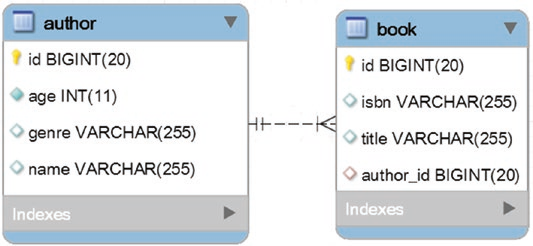
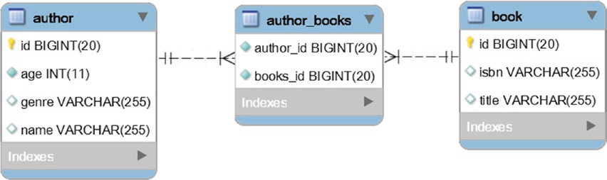

下面的最佳实践都是从性能角度证明双向关联的正确性。
映射 @OneToMany 双向关联

一个作者对应多本发行书，Parent 端 为 Author，Child 端为 Book。
关键点：
总是从 Parent 端到 Child 端级联操作
父对象都不存在的情况下操作子，显然不合理。
-
对于新增操作，如果 Parent 和 Child 的都是瞬时状态的数据调用级联新增（
CascadeType.PERSIST）则没有问题。如果传递的 Child 包含具有 ID 的分离（
Detached）对象，persist 方法会抛出EntityExistsException，因为（参见 JPA 1.0 规范的第 3.2.1 节）明确指出，传入的对象不能是分离的实体。对于一对多关联我们一般也不会传入已有的 Child。
-
对于修改操作。
首先明确一点，Spring Data JPA 对有标识符的对象调用
save时，其实是调用的 JPA 的EntityManager.merge合并操作。1
2
3
4
5
6
7
8
9
10@Transactional
@Override
public <S extends T> S save(S entity) {
if (entityInformation.isNew(entity)) {
em.persist(entity);
return entity;
} else {
return em.merge(entity);
}
}merge操作会先根据分离的实体的唯一标识查询出该实体的持久态，再去合并每一个字段。1
2
3
4
5
6
7public Author merge(Author detached) {
Author newReference = session.byId( Author.class ).load( detached.getId() );
// 复制所有分离的对象属性到持久化的实体中
newReference.setName( detached.getName() );
...
return newReference;
}如果启用了级联合并（
CascadeType.MERGE），则会级联合并 Child 的字段，这要求我们传入的瞬时状态的数据得是完整的（级联合并下也包括 Child），否则就会被级联修改掉。所以尽量不要使用 merge 操作，也不要使用级联合并，除非你知道他如何工作
如果我们只是想修改 Author 的信息：
为了更好的控制要更新的字段，最好的方法是直接使用 HQL 或 JPQL 进行更新 update 语句操作；
1
2
3
4
void updateName(String name, Long authorId);或者先查询对象，对查询出的持久化状态实体进行字段修改，在会话结束时或手动 flush 时会自动更新到数据库。
1
2
3
4authorRepository.findById(1L).ifPresent(author -> {
author.setAge(38);
author.setName("Zeral");
});如果需要同步数据库持久化的 Author、Children 和传入的分离的 Author、Children 的状态。这里分两种情况讨论：
-
传入的数据是完整的，不管是要修改的 Author 部分变更字段还是无需变更字段，或者 Child 的变更字段和无需变更字段，即使我们只是想同步 Child 的关联状态。
比如原始的数据为：
1
2
3
4
5
6
7
8
9
10
11
12
13
14
15
16
17
18
19
20
21
22
23{
"id": 1,
"name": "Mark Janel",
"genre": "Anthology",
"age": 23,
"books": [
{
"id": 1,
"title": "A History of Ancient Prague",
"isbn": "001-JN"
},
{
"id": 2,
"title": "A People's History",
"isbn": "002-JN"
},
{
"id": 3,
"title": "The Beatles Anthology",
"isbn": "001-MJ"
}
]
}想要修改为：
1
2
3
4
5
6
7
8
9
10
11
12
13
14
15
16
17{
"id": "1",
"name": "Alicia Tom",
"genre": "Anthology",
"age": 38,
"books": [
{
"id": 1,
"isbn": "001-JN",
"title": "A History of Ancient Prague"
},
{
"isbn": "004-ZH",
"title": "Zeral's Life"
}
]
}我们既要修改 Author 的信息，也要修改 Book ID 为 1 的信息，然后新增一个 Child，并移除缺失的 ID 为 2、3 的 Book。
可以直接使用 JPA
EntityManager.merge即可，通过级联修改（CascadeType.MERGE）操作，状态会正确被同步。在合并期间，实体的当前状态被复制到刚刚从数据库中获取的持久态实体版本上。这就是 Hibernate 会执行 SELECT 语句的原因，该语句获取 Author 实体及其子实体，和刚才描述的一样。
如果查询不是发起抓取 Author 及其子实体的查询，则可能发生 N+1 查询，则最好自己调用查询抓取所有。
-
如果数据不完整，我们只想修改传入的变更字段。
如果需要同步状态，并且保留已有的关联，可以先通过 Fetch JOIN 或 EntityGraph 操作将 Author 及其子实体查询出来，再去手动同步合并变更状态，这时不需要依赖级联合并操作。
修改 Author 的信息如之前所述，对于一对多的 Child 集合的手动合并分为三步：
detachedBooks 为传入的分离的 Author 的 Books。
-
删除在数据库中存在但在传入的集合中已经不存在的数据行
1
author.getBooks.removeIf(b -> !detachedBooks.contains(b));
-
更新数据库中和传入集合 ID 相同的数据行
1
2
3
4
5
6
7
8
9
10List<Book> newBooks = detachedBooks.stream()
.filter(b -> !author.getBooks().contains(b))
.collect(Collectors.toList());
// 其他分离的实体
detachedBooks.stream().filter(b -> !newBooks.contains(b)).forEach((b) -> {
b.setAuthor(author);
Book mergedBook = bookRepository.save(b);
author.getBooks().set(author.getBooks().indexOf(mergedBook), mergedBook);
}); -
添加传入集合新增的数据到数据库
1
newBooks.forEach(b -> author.addBook(b));
-
-
在 Parent 方使用 mappedBy
mappedBy 指向 Child 端的 @ManyToOne 对象字段的名称，它表示双向 @OneToMany 其实是数据库维护方 @ManyToOne 子端的镜像。
在 Parent 方使用 orphanRemoval 以删除失去引用的 Child
orphanRemoval 表明如果将 Child 从 Parent 中移除，该 Child 将成为孤子，失去了 Parent 的引用，这时候将会被删除。
1 |
在 Parent 端使用工具方法保持两边关联同步
1 | public void addBook(Book book) { |
为了防止前端传过来的数据没有设置 Child 对 Parent 的关联，可以将 Setter 方法设置如下：
1 | public void setBooks(List<Book> books) { |
在关联的两边都使用懒加载
Parent 端 @OneToMany 默认为懒加载，但是在 @ManyToOne 端使用懒加载可以获得比较好的性能，比如我们在获取 Parent 的 Childs 时可以防止 N+1 查询。
1 |
正确实现 equals 和 hashcode
equals 和 hashCode 必须在所有实体状态转换中表现一致。所以不管是瞬时状态还是持久化状态，对象的比较总是一致的。
因此，我们需要通过标识符来去比较对象，标识符分两种类型：
- 分配的标识符
- 数据库生成的标识符
分配的标识符
在刷新 Persistence Context 之前分配分配的标识符，使用 @NaturalId 标识，我们可以进一步将它们分为两个子类别：
-
自然标识符
比如 Book 的 ISBN。
-
与数据库无关的 UUID
与数据库无关的 UUID 编号是在数据库之外生成的，就像调用
java.util.UUID#randomUUID方法一样。
自然标识符和与数据库无关的 UUID 都可以在实体被持久化前被知道。因此，在 equals 和 hashCode 实现中使用它们是安全的：
1 |
|
数据库生成的标识符
数据库生成的标识符是另一回事。因为标识符是在刷新时由数据库分配的，所以如果我们像分配标识符一样基于标识符实现 equals 和 hashCode，一致性保证就会中断。
1 |
|
正确重写 toString
如果 toString() 需要被覆盖，那么注意只涉及从数据库加载实体时获取的基本属性。
移除大量 Child 时使用批量操作
注意移除操作，尤其是移除子实体。 CascadeType.REMOVE 和 orphanRemoval=true 可能会产生过多的查询。在这种情况下，依赖批量操作在大多数情况下是删除的最佳方式。
映射 @ManyToMany 双向关联

选择关系的所有者
使用默认的 @ManyToMany 映射需要开发人员选择关系的所有者和 mappedBy 端（也称为反向端）。只有一侧可以是所有者，连接表在拥有方指定，并且更改仅从这一特定侧传播到数据库，则非拥有方必须使用 @ManyToMany 注释的 mappedBy 元素来指定拥有方的关系字段或属性。例如，Author 可以是所有者，而 Book 端添加了 mappingBy 指定拥有方 Author 的 books 字段。
1 |
|
总是使用 Set 而不是 List
特别是如果涉及删除操作，建议依赖于 Set 而不是 List，因为 Set 的性能高于 List。
1 | private Set<Book> books = new HashSet<>(); // in Author |
Hibernate 将 @ManyToMany 操作当作两个单向的 @OneToMany 操作处理，在此语句的上下文中，实体删除（或重新排序）导致从结表中删除所有关联条目，并重新插入它们以对照内存内容（当前持久性上下文内容）。
如果是 Set 集合的话只会删除单个条目，因为它不保证顺序。
要保留顺序可以使用 @OrderBy 语句，例如使用多个字段排序 ：@OrderBy("age DESC, name ASC")。
保持两边关联同步
同样，我们可以使用之前提及的 addBook、removeBook、removeBooks、setBooks 工具方法保持两边同步。
1 | public void addBook(Book book) { |
避免 CascadeType.ALL 和 CascadeType.REMOVE
在大多数情况下，级联删除是糟糕的想法。 例如，删除 Author 实体不应触发 Book 删除，因为这本书也可以由其他作者引用（一本书可以由几位作者编写）。所以，避免 CascadeType.ALL 和 CascadeType.REMOVE 并依赖于显式 CascadeType.PERSIST 和 CascadeType.MERGE。
1 |
|
-
对于新增操作。这里分两种情况：
-
如果 Parent 和 Child 的都是瞬时状态的数据使用级联新增（
CascadeType.PERSIST）则没有问题，比如下面的数据：1
2
3
4
5
6
7
8
9
10
11
12
13
14
15{
"name": "Alicia Tom",
"age": 38,
"genre": "Anthology",
"books": [
{
"isbn": "003-OG",
"title": "Zeral's Life"
},
{
"isbn": "004-MJ",
"title": "A People's Life"
}
]
}执行 persist 会执行如下语句，级联新增会帮我们新增 Author 和两个 Book 及其关联。
1
2
3
4
5insert into author (age, genre, name) values (?, ?, ?)
insert into book (isbn, title) values (?, ?)
insert into book (isbn, title) values (?, ?)
insert into author_book (author_id, book_id) values (?, ?)
insert into author_book (author_id, book_id) values (?, ?) -
如果我们的 Book 已存在，我们想在新增 Author 时让它帮我们绑定关系，使用级联新增会因为有分离的对象而报错，这时则可以只使用
CascadeType.MERGE来完成。1
2
private Set<Book> books = new HashSet<>();执行 persist 会执行如下语句，级联修改会帮我们新增 Author 和两个 Book 的关联。
1
2
3insert into author (age, genre, name) values (?, ?, ?)
insert into author_book (author_id, book_id) values (?, ?)
insert into author_book (author_id, book_id) values (?, ?)
-
-
对于修改操作：
对于 Parent 字段的修改和之前描述的一样，多对多的关系我们一般只修改关联，无需额外的设置：
1
2
3
4
5
6
7
8authorRepository.findById(detachedAuthor.getId()).ifPresent(author -> {
// 修改 Parent 字段
author.setName(detachedAuthor.getName());
author.setAge(detachedAuthor.getAge());
// 我们只同步关系，不去新增修改 Book 的信息，这里传入的分离的 books 只包含 Id
author.setBooks(detachedAuthor.getBooks());
});
设置关联表
显式设置关联表名称和列名称允许开发人员在引用它们时避免混淆。 这可以通过 @JoinTable 完成，如下例所示
1 |
在关联两边都使用懒加载
默认情况下，@ManyToMany 关联是惰性加载的，不要给他使用立即加载。
正确实现 equals 和 hashcode
如上所述
正确重写 toString
如上所述
需要时使用两个双向的 @OneToMany
如果双向 @OneToMany 关联在删除或更改子元素的顺序时表现更好，或者需要直接操作关联表，则没必要使用 @ManyToMany 关系，因为外键端不受控制。为了克服这个限制，必须直接公开关联表并将 @ManyToMany 关联拆分为两个双向的 @OneToMany 关系。
最自然的 @ManyToMany 关联遵循数据库模式采用的相同逻辑，并且关联表的关联实体控制需要联接的双方的关系。
在这里 Author 和 Book 都使用 @OneToMany mappedBy 到关系维护方中间表 AuthorBook，AuthorBook 使用 Author_Id 和 Book_Id 作为联合主键。
1 |
|
1 |
|
JPA 不允许使用多个 Id 注解，可以使用组合 Id：
1 |
|
1 |
|